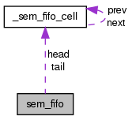

TacOS
0.1
Page principale
Structures de données
Fichiers
Structures de données
Champs de donnée
Champs de données
Référence de la structure sem_fifo
Graphe de collaboration de sem_fifo:

[
légende
]
Champs de données
int
size
sem_fifo_cell
*
head
sem_fifo_cell
*
tail
Description détaillée
Structure d'une fifo.
La documentation de cette structure a été générée à partir du fichier suivant :
kernel/
ksem.c
Tout
Structures de données
Fichiers
Fonctions
Variables
Définitions de type
Énumérations
Macros
Généré le Dimanche Avril 8 2012 22:06:58 pour TacOS par
1.7.6.1
 1.7.6.1
1.7.6.1